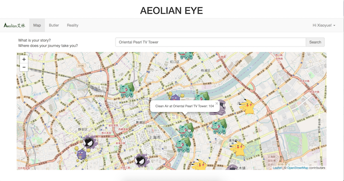
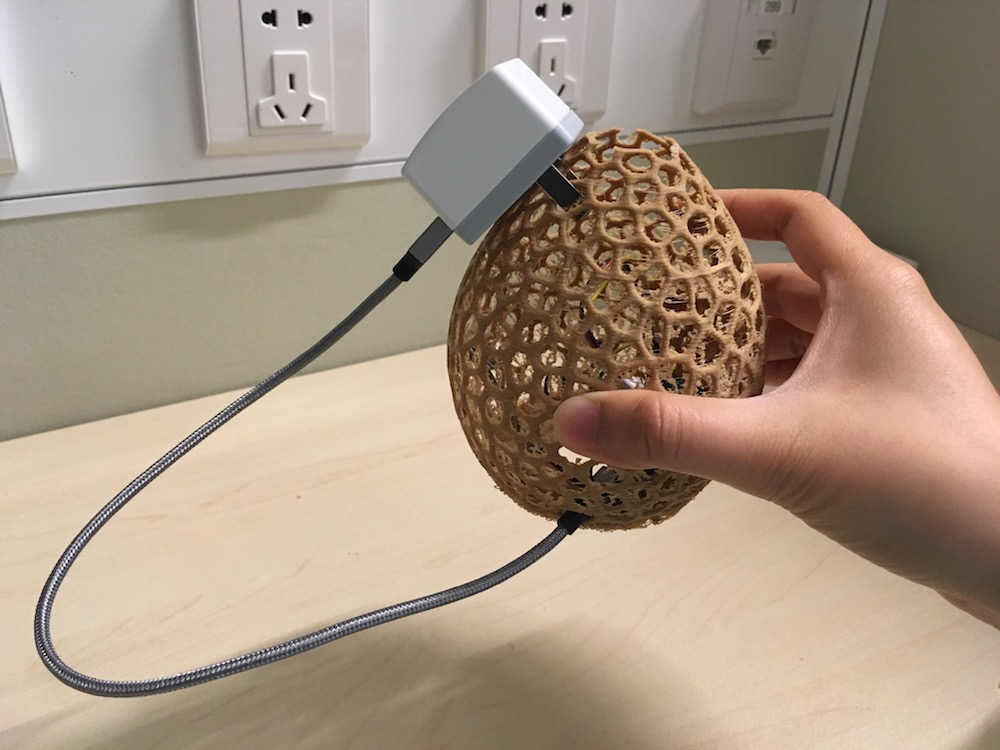
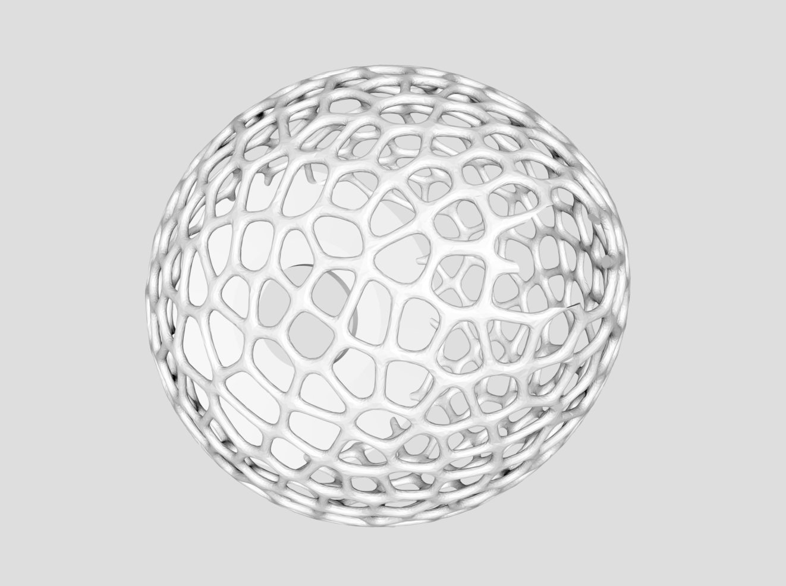

Aeolian Eye
This is an Internet of Things system that provides the real-time air quality data of public and private indoor areas for residents in Chinese cities through a web application, that enhances the information with Augmented Reality.
My freshman year American roommate left NYU Shanghai after a couple of months, largely because of the respiratory disease she acquired from air pollution in Shanghai. This hit me hard and made me realize the pressing nature of the hazardous air environment that my friends, family and myself live in. Watching people around me give up education and opportunities due to air pollution was so upsetting. I decided to do something about it. Since the beiginning of 2015, I have embarked on a number of air quality related projects.
Home Page
Aeolian Augmented Reality Page

Aeolian Map Page
Aeolian Butler Page
Mobile View
With the intent of seeing real-time data in context, Aeolian Eye was born at the intersection of the Internet of Things and augmented reality, monitoring the ubiquitous air pollution through the Internet of Things and displaying the invisible air pollution through Augmented Reality. It is one of many IoT-AR-mixed babies to come, in smart home, public health, civil planning, and every aspect of human life.
The system Aeolian Eye consists of the hardware part and the software part. For the hardware part, numerous sensors are embedded in small physical objects that can be distributed in various indoor areas, sending data of air quality and pollutants information through connection to WiFi. The software part is a web/mobile application that displays air quality and pollutants data in a variety of ways. Aeolian Eye includes Aeolian Map, Aeolian Butler and Aeolian Reality. The Aeolian Map is a map of local areas with dynamic markers on top showing the air quality of different public indoor areas. The Aeolian Butler is a display of air quality and pollutant data for private indoor areas. Aeolian Reality displays an image of the user and the current environment the user is located in and augments the air quality element by displaying either evil cartoon images or dark fogs if the air quality is worrying, or adorable cartoon images or green leaves if otherwise. The three features are basically zooming in on the air quality from a large urban area to household/office to the exact location of the user.


This is an Aeolian air quality sensoring device in an office environment.
The sensors are hidden in the Pokemon and the microcontrollers are hidden in the Pokeball.
Aeolian Eye, in fact, demonstrates a use of the potential and limitation of pairing augmented reality with the Internet of Things explicitly. For Aeolian Butler—the domestic use of Aeolian Eye, where the user might be interested in not just the current real-time data of air quality, but also the trends of the air quality in the past day, week or month, the application employs line charts and table displays. At the same time, Aeolian Reality is supposed to provide a direct sensual feedback on the air quality of the current location of the user, and thus it uses augmented reality which includes a direct inclusion of the user’s own image on the screen to convey the idea that the user is actually being surrounded by and breathing the air pollution.